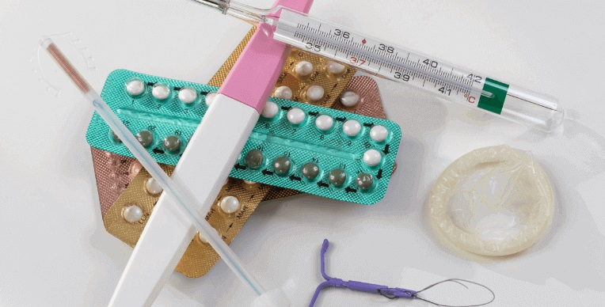
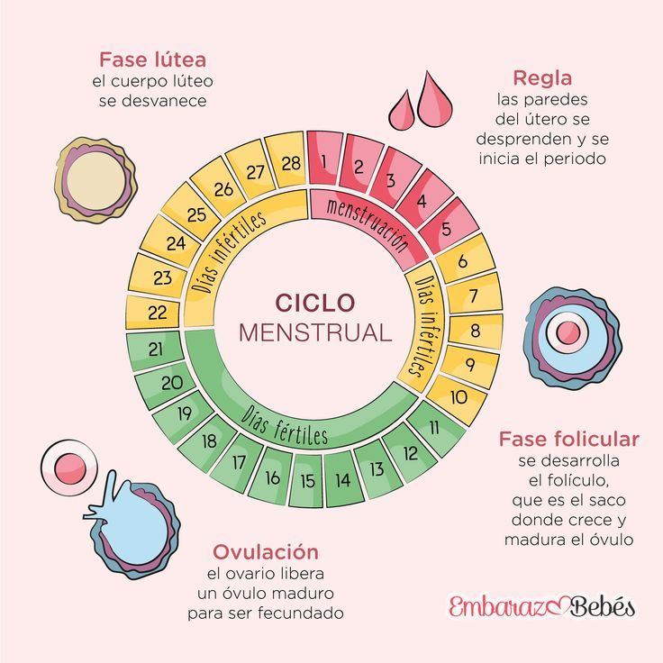
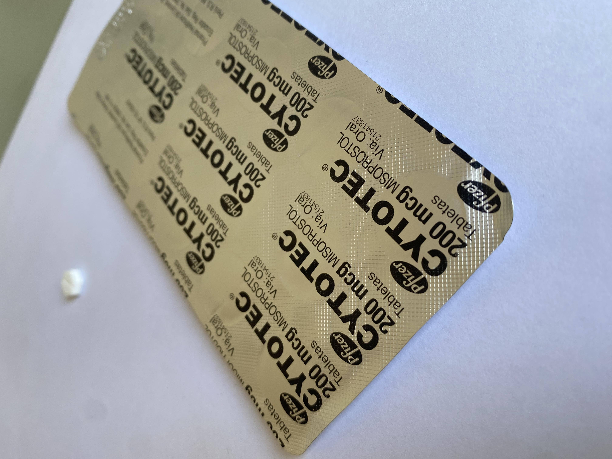

Asesoría Nosotras
Información y acompañamiento sobre anticonceptivos, ciclos menstruales y salud femenina integral.
Explora recursos confiables y orientación para tu bienestar.
Métodos anticonceptivos
Como profesionales en salud femenina, te explicamos todas las opciones: pastillas, DIU, implantes, condones, métodos naturales y más. Cada método tiene indicaciones específicas según tu salud y necesidades.
- Pastillas hormonales y combinadas
- DIU de cobre y hormonal
- Implantes subdérmicos
- Condones masculinos y femeninos
- Métodos naturales y planificación familiar consciente
Ciclo menstrual
Comprender tu ciclo es clave para tu bienestar. Identifica fases, signos de alerta y cómo cuidarte en cada etapa.
- Fase folicular: preparación del cuerpo para la ovulación
- Ovulación: momento de fertilidad máxima
- Fase lútea: preparación del endometrio y cambios hormonales
- Manejo de síntomas: dolor, cambios emocionales y flujo
Salud sexual y reproductiva
Promovemos prácticas seguras, prevención de ITS y planificación familiar según recomendaciones médicas.

- Prevención y diagnóstico de ITS
- Chequeos ginecológicos periódicos
- Educación sexual integral
- Planificación familiar y métodos anticonceptivos
Apoyo emocional y autocuidado
El bienestar emocional es esencial. Brindamos recursos de contención, técnicas de autocuidado y orientación profesional.

- Terapia y contención emocional
- Gestión del estrés y ansiedad
- Técnicas de autocuidado físico y mental
- Red de apoyo y acompañamiento profesional
Aborto seguro
Información sobre derechos, métodos seguros y acompañamiento según la OMS.
¿Cómo funciona el acompañamiento?
- Consulta inicial: Contacto vía WhatsApp o formulario.
- Evaluación profesional: Revisión confidencial por un médico certificado.
- Entrega del medicamento: Instrucciones claras y seguras.
- Seguimiento y apoyo: Acompañamiento durante todo el proceso.
Más del 95 % de los casos culminan sin complicaciones siguiendo el protocolo médico.
Uso de Misoprostol (Cytotec)
El misoprostol es un medicamento utilizado en ginecología y obstetricia. Su uso debe ser supervisado por profesionales de la salud.
